Chemistry¶
The Debye-Huckel (or ion-cloud) theory of ion-ion interaction¶
Activity coefficients and ion-ion interactions¶
Evolution of the concept of an acitivty coefficients
The existence of ions in solution, of interactions between these ions, and of a chemical-potential change 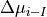 arising from ion-ion interactions have all been taken to be self-evident in the treatment hitherto presented here. This, however, is a modern point of view. The thinking about electrolytic solutions actually developped along different path.
Ionic solutions were at first treated in the same way as nonelectrolytic solutions, though the latter do not contain
charged species. The starting point was the classical thermodynamic formula for the chemical potential  of a nonelectrolyte solute
of a nonelectrolyte solute
()¶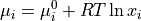
In this expression,  is the concentration of the solute in mole fraction units, and
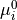 is its the chemical potential in the standard state, i.e., when a standard
or a normalized value of unity
is the concentration of the solute in mole fraction units, and
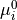 is its the chemical potential in the standard state, i.e., when a standard
or a normalized value of unity
()¶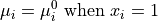
Since the solute particles in a solution of a nonlectrolyte are uncharged, they do not engage
in long-range Coulombic interactions. The short-range interaction arising from dipole-dipole or dispersion forces
become significant only when the mean distance between the solute particles is small, i.e., when the concentration
of the solute is high. Thus, one can to a good approximation say that there are no between solute particles
in dilute nonelectrolyte solutions. Hence, if Eq. for the chemical potential of a solute
in a nonelectrolyte solution (with noninteracting particles) is used fot the chemical potential of an ionic species  in an electrolytic solution, then it is tantamount to ignoring the long-range Coulombic interactions between ions.
In an actual electrolytic solution, however, ion-ion interactions operate whether one ignores them or not.
It is obvious therefore that measurements of the chemical potential of an ionic species or, rather,
measurements of any property that depends on the chemical potential would reveal the error in Eq.,
which is blind to ion-ion interactions. In other words, experiments show that even in dilute solutions,
in an electrolytic solution, then it is tantamount to ignoring the long-range Coulombic interactions between ions.
In an actual electrolytic solution, however, ion-ion interactions operate whether one ignores them or not.
It is obvious therefore that measurements of the chemical potential of an ionic species or, rather,
measurements of any property that depends on the chemical potential would reveal the error in Eq.,
which is blind to ion-ion interactions. In other words, experiments show that even in dilute solutions,
()¶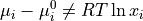
In this context, a frankly empirical approach was adopted by earlier workers not yet blessed by Debye and Huckel’s light. Solutions that obeyed Eq. were characterized as ideal solutions since this equation applies to systems of noninteracting solute particles, i.e, ideal particles. Electrolytic solutions that do not obey the equation were said to be nonideal. In order to use an equation of the form of Eq. to treat nonideal electrolytic solutions, an empirical correction factor 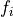 was introduced by Lewis as a modifier of the concentration term.
()¶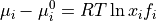
It was argued that, in nonideal solutions, it was not just the analytical concentration
of species i, but its effective concentration 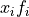 which determined the chemical-potential
change 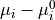. This effective concentration was also known as the activity
of the species i, i.e.,
()¶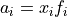
and the correction factor , as the activity coefficient. For ideal solutions, the activity coefficient
is unity, and the activity becomes identical to the concentration , i.e.,
()¶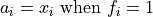
Thus, the chemical-potential change in going from the standard state to the final state can be written as
()¶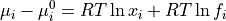
Eq. summarizes the empirical or formal treatment of the behavior of electrolytic solutions. Such a treatment cannot furnish a theoretical expression for the acitivity coefficient . It merely recognizes that expressions such as Eq. must be modified if significant forces exist between solute particules.
The physical significance of activity coefficients¶
For a hypothetical system of ideal (noninteracting) particles, the chemical potential has been stated to be given by
()¶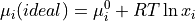
For a real system of interacting particles, the chemical potential has been expressed in the form
()¶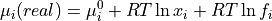
Hence, to analyze the physical significance of the activity coefficient term in Eq. , it is necessary to compare this equation with Eq.. It is obvious that when Eq. is substracted from Eq., the difference is the chemical-potential change arising from the interactions between the solute particles (ions in the case of electrolytic solutions). That is
()¶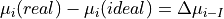
and therefore,
()¶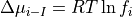
Thus, the activity coefficient is a measure of the chemical-potential change arising from ion-ion interactions. There are several well-established methods of experimentally determining activity coefficients, and these methods are treated in adequate details in standard treatises.
Now, according to the Debye-Huckel theory, the chemical-potential change arising from ion-ion interactions has been shown to be given by
()¶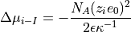
Hence, combining Eq. and Eq., the result is
()¶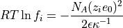
Thus, the Debye-Huckel ionic-cloud model for ion-ion interactions has permitted a theoretical calculation of activity coefficients resulting in Eq..
The activity coefficient in Eq. arises from the formula Eq.
for the chemical potential, in which the concentration of the species i is expressed in mole fraction units .
One can also express the concentration in moles per liter of solution (molarity) or in moles per kilogram of solvent (molality).
Thus, alternative formulas for the chemical potential of a species i in an ideal solution read
()¶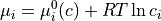
and
()¶
where  and are the molarity and molality of the species i, respectively, 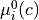
and 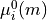 are the corresponding standard chemical potentials.
and are the molarity and molality of the species i, respectively, 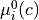
and 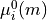 are the corresponding standard chemical potentials.
When the concentration of the ionic species in a real solution is expressed as molarity and molality
, there are corresponding activity coefficients and 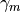 and corresponding expressions for
()¶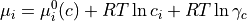
()¶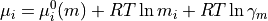